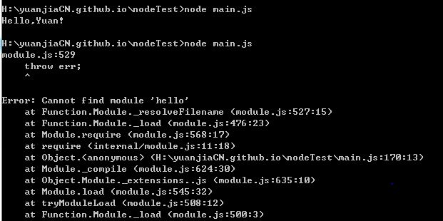

0.什么是模块
在计算机程序的开发过程中，随着程序代码越写越多，在一个文件里代码就会越来越长，越来越不容易维护。
为了编写可维护的代码，我们把很多函数分组，分别放到不同的文件里，这样，每个文件包含的代码就相对较少，很多编程语言都采用这种组织代码的方式。在Node环境中，一个.js文件就称之为一个模块（module）。
1.使用模块有什么好处？
最大的好处是大大提高了代码的可维护性。其次，编写代码不必从零开始。当一个模块编写完毕，就可以被其他地方引用。我们在编写程序的时候，也经常引用其他模块，包括Node内置的模块和来自第三方的模块。
使用模块还可以避免函数名和变量名冲突。相同名字的函数和变量完全可以分别存在不同的模块中，因此，我们自己在编写模块时，不必考虑名字会与其他模块冲突。
一个小例子
编写hello.js文件
var s ="Hello";
function greet(name) {
console.log(s + "," + name + "!");
}
module.exports = greet;
最后一行就是说：把函数greet作为模块的输出暴露出去，这样其他模块就可以使用greet函数了。
再编写一个main.js文件调用hello模块的greet函数
var greet = require("./hello");
var s = "Yuan";
greet(s);//Hello, Yuan!
其中的greet变量就是在hello.js文件中用module.exports = greet输出的greet函数.
这样，main.js就成功的引用了hello.js模块中定义的greet()函数，接下来就可以调用引用它了。
在使用require()引入模块的时候，请注意模块的相对路径。因为main.js和hello.js位于同一个目录，所以用了当前目录.：
var greet = require('./hello'); // 不要忘了写相对目录!
如果只写模块名：
var greet = require('hello');
则Node会依次在内置模块、全局模块和当前模块下查找hello.js，很可能会得到一个错误：
2.CommonJS规范
这种模块加载机制被称为CommonJS规范。在这个规范下，每个.js文件都是一个模块，它们内部各自使用的变量名和函数名都互不冲突，例如，hello.js和main.js都申明了全局变量var s = 'xxx'，但互不影响。
一个模块想要对外暴露变量（函数也是变量），可以用module.exports = variable;，一个模块要引用其他模块暴露的变量，用var ref = require('module_name');就拿到了引用模块的变量。